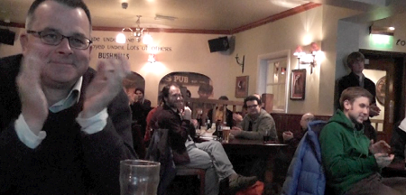

For too long, Cardiff's software development community has been fragmented by language, discipline, and platform.
unified.diff is a monthly meet-up for anybody involved or interested in the field of software development.
We hold tech talks, and trade war stories.
Following the success of our first event, we are already stoked to be organising the next one.
We had a great turnout for the first event. All talks were received very well, massive thanks to the speakers and to everyone who made the trip to attend.
Video recordings of the tech talks given will be available very soon. Here's a taster!
Unified Diff - 1st Feb 2012 from Suma Pugh on Vimeo.

If you'd like to give a tech talk, or have something you'd like to share at a future event, we'd love to hear from you.
Contact us via Twitter - @unifieddiff